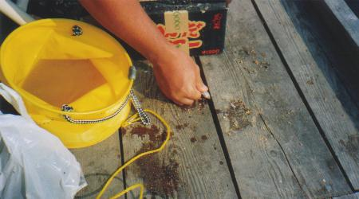
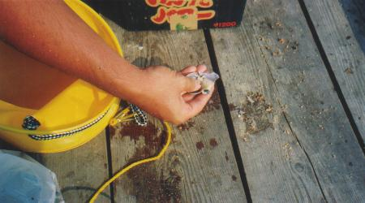
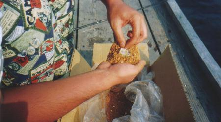
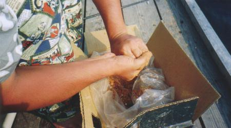
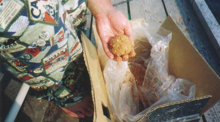
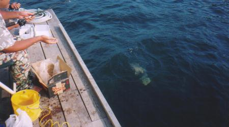

平成１２年度 上田市消防団第十六分団ラッパ班
「能登島における、魚類捕獲調査および海洋視察」 その２
今回は「イカダからクロダイを狙ったダンゴ釣り」です。エサをダンゴでくるむと、その重みで海底のポイントへエサを迅速に運ぶことができます。 |
|  |
エサは地元の釣具店で調達した「アケミ貝」。殻はそんなに硬くないので、このように板の隙間を利用すればカンタンに割ることができます。 |
|  |
むき身をとって、これを針に通します。本命以外のお魚さんに盗られないよう、外れないように工夫してしっかりつけましょう。 |
|  |
エサを針に通したら、それをタネに「ダンゴ」なるものを作ります。このダンゴが海中で溶け、お魚さんをいっぱい誘き寄せます。 |
|  |
このダンゴには、本命エサがポイントに着くまで保護する機能もあるので、途中で壊れないようにしっかり握ります。 |
|  |
ダンゴの硬さはポイントまでの深さ、海流の強さで調整します。しかしこの「ダンゴ釣り」を考えついた先人のお知恵にはホント脱帽です。超合理的。 |
|  |
このダンゴを海中へ投入します。サオで吊り上げるとエサが外れてしまうので、ダンゴを放り投げる感じでやってみましょう。 |
≪前のページ |
次のページ≫ |